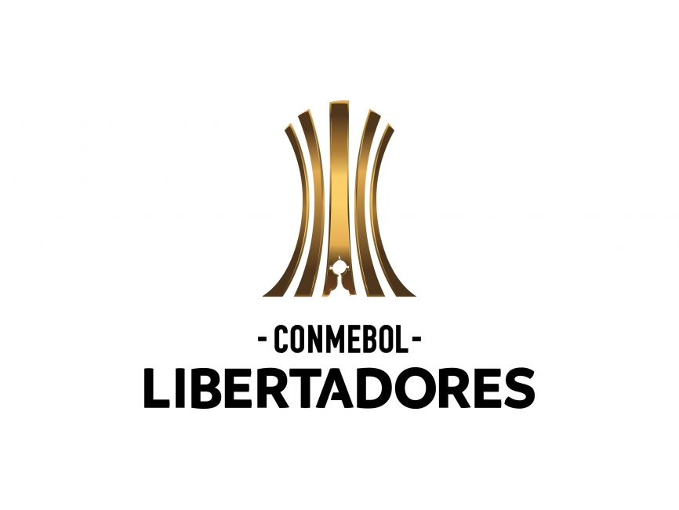

bienvenida
Hola, Bienvenidos a MataCenteno tu sitio web del fútbol
mundial.
Espero que tu visita a ésta plataforma sea de lo más
placentera y
quiero que sepas que siempre seras bienvenido
#7FFFD4

Noticias


Partidos para la semana del 13 y 14/02/2024 y
semana del 20 y 21/02/2024
Resultados de partidos de ida del Martes 13/02:
- RB Leipzig 0 vs Real Madrid CF 1
- FC Copenhague 1 vs Manchester City FC 3
Resultados de los partidos de ida del Miercoles 14/02:
- Lazio 1 vs Bayern Munich 0
- PSG FC 2 vs Real Sociedad 0
Resultados de los partidos de ida de octavos del martes 20/02/2024:
- PSV Eindhoven 1 vs Borussia Dortmund 1
- Inter Milan 1 vs Atletico de Madrid 0
Resultados de los partidos de ida de octavos del miercoles 21/02/2024:
- SSC Napoles 1 vs FC Barcelona 1
- FC Oporto 1 vs Arsenal 0
Resulatdos de los partidos de vuelta de octavos de final para el martes 05/03/2024
- Bayern Munich 3 vs 0 Lazio
- Real Sociedad 1 vs 2 PSG
Resultados de los partidos de vuelta de octavos de final para el miercoles 06/03/2024
- Real Madrid CF 1 vs 1 RB Leipzig
- Manchester City FC 3 vs 1 FC Copenhague
Resultados de los partidos de vuelta de octavos para el martes 12/03/2024:
- Arsenal 1 (4)vs(3) 0 Porto
- Barcelona 3 vs 1 Napoli
Resultados de los partidos de vuelta de octavos para el miercoles 13/03/2024:
- Borussia Dortmund 2 vs 0 PSV
- Atletico de Madrid 2 (3)vs(2) 1 Inter de Milan
Resultados de los partidos de ida de cuartos de final del martes 09/04/2024:
- Real Madrid 3 vs 3 Manchester City
- FC Arsenal 2 vs 2 Bayern Munich
Partidos de ida de cuartos de final del miercoles 10/04/2024
- PSG vs FC Barcelona 15:00 hora venezolana
- Atletico de Madrid vs Borussia Dortmund 15:00 hora venezolana
>Partido de Champions del martes 09/04/2024
Real Madrid vs Manchester City, partido de ida de los cuartos de final de la Champions de esta temporada, el cual estuvo lleno de goles, comenzando el City con el primer golpe, gol de Bernardo Silva a los 2 minutos de juego. El City tenia la pelota, pero el Madrid contragolpeaba. Luego, pocos minutos despues, Camavinga chuta hacia la porteria citizen e impacta en Ruben Diaz para colarse en la arqueria y gol, se empataba el partido. El Madrid contragolpeaba de manera muy rapida, con dos toques ya estaba en area contraria. A los 15 minutos del primer tiempo, Vinicius roba el balon en el medio de la cancha y da un pase en profundidad a Rodrigo que quedo solo contra dos defensas e hizo un disparo un poco timido pero muy eficaz que se convirtio en la del Madrid de irse arriba, Madrid 2 City 1, de esta manera terminaba el primer tiempo, con un Madrid teniendo sus ocasiones pero sin concretarlas y un Manchester perdido en el campo, sin conexion entre sus jugadores. En el segundo tiempo, el City mejora su juego y domina el encuentro, para que pocos minutos de haber comenzado el segundo tiempo, tremendo disparo de Foden que dio a parar a la esquina suoerior izquierda de la arqueria y golazo, se empataba el partido. A los 66 minutos, zapatazo de Gvardiol para el desempate y los citizens se iban arriba, 3 goles a 2, pero los merengues no se iban a quedar atras y aprovechando que el City se metio atras, comenzaron animarse en el ataque y a centro de Vinicius, Valverde de volea dispara y golazo del Madrid para un definitivo 3 a 3 del partido. Pienso que la eliminatoria quedo a favor del City, ya que el partido de vuelta va a ser en Manchester y sabemos que el City es poderoso en su casa
Partido de Champions del miercoles 13/03/2024:
Atletico de Madrid vs Inter de Milan, partido de vuelta de los octavos de final de la Champions de esta temporada, partido jugado en el Wanda Metropolitano de la ciudad de Madrid. Fue todo un espectaculo, ya que el Atletico salio a comerse el partido y el Inter saliendo de contra, esta fue la tonica de todo el partido. El Inter con gol de Dimarco se ponia 1 a 0, en el global 2 a 0 pero el equipo colchonero reacciono con gol de Griezman, y asi termino el primer tiempo. Luego en el segundo tiempo, el Inter tuvo en los botines de Thuram la de cerrar el partido, pero el frances no estuvo fino esta tarde. Con jugada de Riquelme que ingreso en el segundo tiempo y pase a Depay para que este disparara al arco y se iba arriba el Atletico 2 a 1 el encuentro y se empataba la serie 2 a 2. Ingreso Alexis Sanchez por el Inter y bueno fue muy tarde, al chileno tuvieron que haberlo metido antes, ya que era el jugador que distribuia balon y hacia que el Inter tuviera mayor posesion. Bueno pasaron los dos tiempos complementarios y llegamos a los penales, donde por el Inter le pararon el penal a Alexis y a Lautaro, asi que el equipo madrileño pasa a cuartos de final y va al sorteo de cuartos este viernes

Europa League

En este mes de febrero se jugaran los partidos de play offs, donde
se enfrentaran los 8 equipos que quedaron de subcampeones de cada
grupo de la fase de grupos de esta competicion contra los 8
equipos que quedaron terceros en la fase de grupos de la Champions
de esta temporada
Como goleador de la competicion tenemos a Joao Pedro del Brighton
con 6 goles y como mejor asistidor a Kostas Fortounis del Olympiakos
con 6 asistencias
Los resultados de los partidos de ida de Play Offs de este jueves 15/02 son los siguientes:
- FC Shakhtar Donetsk 2 vs Olympique Marsella 2
- Young Boys 1 vs Sporting Portugal 3
- Galatasary SK 3 vs AC Sparta Praga 2
- Feyenoord Rotterdam 1 vs AS Roma 1
- SC Braga 2 vs Qarabag FK 4
- AC Milan 3 vs FC Stade Rennes 0
- RC Lens 0 vs SC Friburgo 0
- Benfica 2 vs Toulouse FC 1
Resultados de los partidos de Playoffs del jueves 22/02
- Qarabag FK 2 vs SC Braga 3
- SC Friburgo 3 vs RC Lens 2
- Toulouse FC 0 vs Benfica 0
- FC Stade Rennes 3 vs AC Milan 2
- Olympique Marsella 3 vs FC Shakhtar Donetsk 1
- Sporting Portugal 1 vs Young Boys 1
- AC Sparta Praga 4 vs Galatasary SK 1
- AS Roma 1 (4) vs Feyenoord Rotterdam 1 (2)
Total de equipos que van a octavos en la Europa League:
- Westham, Brighton, Rangers, Atalanta, Liverpool, Villarreal, Slavia Praga, Bayern Leverkusen
- Milan, Friburgo, Benfica, Qarabaq, Marsella, Sporting CP, Sparta de Praga, Roma
Fecha de sorteo de los octavos de final de la Europa League:
El sorteo para octavos de final de esta temporada sera este viernes 23/02 en Suiza
aproximadamente a las 7:00 de la mañana hora venezolana
Resultados de los partidos de octavos de final de la Europa League 23/24 de este jueves 07/03/2024:
- SP Portugal 1 vs 1 Atalanta
- FK Qarabag 2 vs 2 Bayern Leverkusen
- Roma 4 vs 0 Brighton
- S. Praga 1 vs 5 Liverpool
- Benfica 2 vs 2 Rangers
- Marsella 4 vs 0 Villarreal
- Milan 4 vs 2 Slavia P.
- Friburgo 1 vs 0 West Ham
Resultados de los partidos de vuelta de octavos para este jueves 14/03/2024:
- Slavia Praga 1 vs 3 Milan
- West Ham 5 vs 0 Friburgo
- Villarreal 3 vs 1 Marsella
- Rangers 0 vs 1 Benfica
- Atalanta 2 vs 1 SP Portugal
- Bayern Leverkusen 3 vs 2 FK Qarabaq
- Brighton 1 vs 0 AS Roma
- Liverpool 6 vs 1 S. Praga
Partidos de ida de cuartos de final del jueves 11/04/2024
- Liverpool vs Atalanta 15:00 hora venezolana
- Milan vs AS Roma 15:00 hora venezolana
- Bayern Leverkusen vs West Ham United 15:00 hora venezolana
- Benfica vs Marsella 15:00 hora venezolana 15:00 hora venezolana
Opinion
Venezuela femenino vs Panama femenino, amistoso de fecha FIFA de abril del 2024. Tremenda actuacion de las venezolanas en el estadio Brigido Iriarte de Caracas, dejando en el camino a las panameñas. Desde el principio del partido hasta el final la vinotinto domino el encuentro, teniendo varias oportunidades de anotar y donde las jugadoras venezolanas mostraron su potencial. Despues de varios intentos, en el minuto 21 del primer tiempo, Gabi Garcia anticipando a la defensa panameña, hace un disparo de cabeza y anota, Venezuela 1 Panama 0. Luego en el segundo tiempo, al minuto 58, despues de un disparo de la jugadora vinotinto, Speckmaer, el rebote le quedo a Ysaura Viso quien no dudo en hacer un disparo violento y dar por sentenciado el encuentro y la vinotinto pasaba a ganar 2 goles a cero. Me gusto mucho la actuacion de las venezolanas, sobre todo la jugadora Barbara Olivieri quien nunca dejo de hacer pases y driblarse a medio mundo, y tambien me gustaria hacer mencion del golazo de Garcia, que clase de anticipacion, ni Godin en sus mejores momentos, de verdad que me sorprendio que una jugadora pudiera hacer eso que ella hizo, fue magistral

Copa Libertadores

Resultados de los partidos de la fase preliminar para este martes 05/03/2024:
- Nacional 0 vs 2 Palestino
Resultados de los partidos de la fase preliminar para este miercoles 06/03/2024:
- Botafogo 2 vs 1 Bragantino
- Sportivo Trinidense 1 vs 1 Colo Colo
Resultados de los partidos de la fase preliminar para este jueves 07/03/2024:
- Always Ready 1 vs 0 Nacional de Uruguay
Resultados de partidos de vuelta de la fase preliminar de la semana 12 al 14/03/2024:
- Colo Colo 2 vs 1 Sportivo Trinidense
- Bragantino 1 vs 1 Botafogo
- Palestino 1 (3)vs(1) 3 Nacional
- Nacional 2 (5)vs(4) 1 Always Ready
La fase de grupos de la Conmebol Libertadores comenzara en la semana del miercoles 03/04/2024
Fase de Grupos
| Equipo | PJ | PG | PP | PE | GF | GC | DG | Pts |
|---|---|---|---|---|---|---|---|---|
| Colo Colo | 1 | 1 | 0 | 0 | 1 | 0 | 1 | 3 |
| Fluminense | 1 | 0 | 0 | 1 | 1 | 1 | 0 | 1 |
| Alianza Lima | 1 | 0 | 0 | 1 | 1 | 1 | 0 | 1 |
| Cerro Porteño | 1 | 0 | 1 | 0 | 0 | 1 | -1 | 0 |
| Equipo | PJ | PG | PP | PE | GF | GC | DG | Pts |
|---|---|---|---|---|---|---|---|---|
| Talleres | 1 | 1 | 0 | 0 | 2 | 1 | 1 | 3 |
| Barcelona | 1 | 0 | 0 | 1 | 1 | 1 | 0 | 1 |
| Cobresal | 1 | 0 | 0 | 1 | 1 | 1 | 0 | 1 |
| San Pablo | 1 | 0 | 1 | 0 | 1 | 2 | -1 | 0 |
| Equipo | PJ | PG | PP | PE | GF | GC | DG | Pts |
|---|---|---|---|---|---|---|---|---|
| The Strongest | 1 | 1 | 0 | 0 | 2 | 0 | 2 | 3 |
| Estudiantes | 1 | 0 | 0 | 1 | 1 | 1 | 0 | 1 |
| Huachipato | 1 | 0 | 0 | 1 | 1 | 1 | 0 | 1 |
| Gremio | 1 | 0 | 1 | 0 | 0 | 2 | -2 | 0 |
| Equipo | PJ | PG | PP | PE | GF | GC | DG | Pts |
|---|---|---|---|---|---|---|---|---|
| Junior | 1 | 1 | 0 | 0 | 3 | 1 | 2 | 3 |
| Universitario | 1 | 1 | 0 | 0 | 2 | 1 | 1 | 3 |
| Liga de Quito | 1 | 0 | 1 | 0 | 1 | 2 | -1 | 0 |
| Botafogo | 1 | 0 | 1 | 0 | 1 | 3 | -2 | 0 |
| Equipo | PJ | PG | PP | PE | GF | GC | DG | Pts |
|---|---|---|---|---|---|---|---|---|
| Bolivar | 1 | 1 | 0 | 0 | 4 | 0 | 4 | 3 |
| Flamengo | 1 | 0 | 0 | 1 | 1 | 1 | 0 | 1 |
| Millonarios | 1 | 0 | 0 | 1 | 1 | 1 | 0 | 1 |
| Palestino | 1 | 0 | 1 | 0 | 0 | 4 | -4 | 0 |
| Equipo | PJ | PG | PP | PE | GF | GC | DG | Pts |
|---|---|---|---|---|---|---|---|---|
| Independiente del Valle | 1 | 0 | 0 | 1 | 1 | 1 | 0 | 1 |
| Palmeiras | 1 | 0 | 0 | 1 | 1 | 1 | 0 | 1 |
| Liverpool | 1 | 0 | 0 | 1 | 1 | 1 | 0 | 1 |
| San Lorenzo | 1 | 0 | 0 | 1 | 1 | 1 | 0 | 1 |
| Equipo | PJ | PG | PP | PE | GF | GC | DG | Pts |
|---|---|---|---|---|---|---|---|---|
| Atletico Mineiro | 1 | 1 | 0 | 0 | 4 | 1 | 3 | 3 |
| Rosario Central | 1 | 1 | 0 | 0 | 1 | 0 | 1 | 3 |
| Peñarol | 1 | 0 | 1 | 0 | 0 | 1 | -1 | 0 |
| Caracas | 1 | 0 | 1 | 0 | 1 | 4 | -3 | 0 |
| Equipo | PJ | PG | PP | PE | GF | GC | DG | Pts |
|---|---|---|---|---|---|---|---|---|
| River Plate | 1 | 1 | 0 | 0 | 2 | 0 | 2 | 3 |
| Nacional | 1 | 1 | 0 | 0 | 2 | 0 | 2 | 3 |
| Deportivo Tachira | 1 | 0 | 1 | 0 | 0 | 2 | -2 | 0 |
| Libertad | 1 | 0 | 1 | 0 | 0 | 2 | -2 | 0 |
Partidos de fase de grupos de esta semana
Resultados del martes 02/04/2024
- Cobresal 1 vs 1 Barcelona SC
- Millonarios 1 vs 1 Flamengo
- The Strongest 2 vs 0 Gremio
- Deportivo Tachira 0 vs 2 River Plate
- Universitario de Deportes 2 vs 1 LDU Quito
Resultados del miercoles 03/04/2024
- Huachipato 1 vs 1 Estudiantes
- Botafogo 1 vs 3 Junior
- Nacional 2 vs 0 Libertad
- Colo Colo 1 vs 0 Cerro Porteño
- Alianza Lima 1 vs 1 Fluminense
- San Lorenzo 1 vs 1 Palmeiras
Resultados del jueves 04/04/2024
- Caracas 1 vs 4 Atletico Mineiro
- Rosario Central 1 vs 0 Peñarol
- Talleres de Cordoba 2 vs 1 San Pablo
- Palestino 0 vs 4 Bolivar
- Liverpool 1 vs 1 Independiente del Valle
Partidos de fase de grupos de esta semana
Martes 09/04/2024
- Estudiantes vs The Strongest 18:00 hora venezolana
- Gremio vs Huachipato 18:00 hora venezolana
- Fluminense vs Colo Colo 20:00 hora venezolana
- Club Libertad vs Deportivo Tachira 20:00 hora venezolana
- Junior vs Universitario de Deportes 22:00 hora venezolana
Miercoles 10/04/2024
- Cerro Porteño vs Alianza Lima 18:00 hora venezolana
- Independiente del Valle vs San Lorenzo 18:00 hora venezolana
- Atletico Mineiro vs Rosario Central 18:00 hora venezolana
- Peñarol vs Caracas 20:00 hora venezolana
- Sao Paulo vs Cobresal 20:30 hora venezolana
- Flamengo vs Palestino 20:30 hora venezolana
- Barcelona SC vs Talleres 22:00 hora venezolana
Jueves 11/04/2024
- LDU Quito vs Botafogo 18:00 hora venezolana
- Club Bolivar vs Millonarios 18:00 hora venezolana
- Palmeiras vs Liverpool 20:00 hora venezolana
- River Plate vs Nacional 20:00 hora venezolana
Deportivo Tachira vs River Plate
Primer partido para ambas escuadras en la fase de grupos de la Conmebol Libertadores del 2024 Fue un partido de mucha entrega por parte de los venezolanos, ya que tenian que frenar al gigante suramericano. En el primer tiempo vimos un River dominante pero sin muchas ideas que tuvo varias ocasiones de gol pero lejos de concretarse. Por el conjunto venezolano, el ataque estuvo comandado por Chacon y en la medular por Cova, pero no fue suficiente el talento de estos vinotinto para hacer daño al conjunto argentino. En el segundo tiempo, seguia River dominando pero con poca profundidad hasta que Demichelis metio al diablito Echeverri y River cambio y tuvo mayor dinamica en la delantera y al minuto 26 del segundo tiempo llego el gol de Basseli que aprovecho un rebote en el area venezolana y River 1 Tachira 0, luego con un derechazo de Facundo vino el segundo gol de River y la de cerrar el partido. Luego Echeverri tuvo una que otra y por parte de los venezolanos, se les anulo un gol en tiempo de descuento, no era la noche de los tachirenses que se vieron superados por el club argentino
Sudamericana

Resultados de los partidos de fase preliminar para este martes 05/03/2024:
- U. Catolica 0 vs 2 Coquimbo Unido
- Real Tomayapo 0(4)vs 0(3)Wilstermann
- Deportivo Garcilaso 0(4) vs 0(3) ADT
- Carabobo 1(4) vs 1(5) Metropolitanos FC
- Tolima 0(2) vs 0(4) Medellin
Resultados de los partidos de la fase preliminar para este miercoles 06/03/2024:
- Universitario de Vinto 0 vs 2 Nacional Potosi
- Everton 0 vs 1 U. La Calera
- Dep. Cuenca 2 vs 5 Delfin
- Wanderers 0 vs 1 Danubio
- Guarani 0 vs 1 Sportivo Luqueño
- Alianza Petrolera 2 vs 1 America
Resultados de los partidos de la fase preliminar para este jueves 07/03/2024:
- Racing 2 vs 0 Cerro Largo
- Rayo Zuliano 0(4) vs 0(2) Dep. La Guaira
- Cesar Vallejo 2 vs 0 Sport Huancayo
- Sportivo Ameliano 2 vs 0 Olimpia
- Tecnico Universitario 0 vs 3 U. Catolica
La fase de grupos de la Conmebol Sudamericana 2024 comenzara la semana del 03/04/2024
Fase de Grupos
| Equipo | PJ | PG | PP | PE | GF | GC | DG | Pts |
|---|---|---|---|---|---|---|---|---|
| Always Ready | 1 | 1 | 0 | 0 | 2 | 0 | 2 | 3 |
| Defensa y Justicia | 1 | 1 | 0 | 0 | 1 | 0 | 1 | 3 |
| Universidad Cesar Vallejo | 1 | 0 | 1 | 0 | 0 | 1 | -1 | 0 |
| Independiente Medellin | 1 | 0 | 1 | 0 | 0 | 2 | -2 | 0 |
| Equipo | PJ | PG | PP | PE | GF | GC | DG | Pts |
|---|---|---|---|---|---|---|---|---|
| Union La Calera | 1 | 1 | 0 | 0 | 1 | 0 | 1 | 3 |
| Cruzeiro | 1 | 0 | 0 | 1 | 0 | 0 | 0 | 1 |
| Universidad Catolica (Ecuador) | 1 | 0 | 0 | 1 | 0 | 0 | 0 | 1 |
| Alianza FC | 1 | 0 | 1 | 0 | 0 | 1 | -1 | 0 |
| Equipo | PJ | PG | PP | PE | GF | GC | DG | Pts |
|---|---|---|---|---|---|---|---|---|
| Delfin | 1 | 1 | 0 | 0 | 2 | 0 | 2 | 3 |
| Belgrano | 1 | 0 | 0 | 1 | 0 | 0 | 0 | 1 |
| Internacional | 1 | 0 | 0 | 1 | 0 | 0 | 0 | 1 |
| Real Tomayapo | 1 | 0 | 1 | 0 | 0 | 2 | -2 | 0 |
| Equipo | PJ | PG | PP | PE | GF | GC | DG | Pts |
|---|---|---|---|---|---|---|---|---|
| Fortaleza | 1 | 1 | 0 | 0 | 2 | 0 | 2 | 3 |
| Boca Juniors | 1 | 0 | 0 | 1 | 0 | 0 | 0 | 1 |
| Nacional Potosi | 1 | 0 | 0 | 1 | 0 | 0 | 0 | 1 |
| Sportivo Trinidense | 1 | 0 | 1 | 0 | 0 | 2 | -2 | 0 |
| Equipo | PJ | PG | PP | PE | GF | GC | DG | Pts |
|---|---|---|---|---|---|---|---|---|
| Atletico Paranaense | 1 | 1 | 0 | 0 | 4 | 1 | 3 | 3 |
| Danubio | 1 | 1 | 0 | 0 | 2 | 0 | 2 | 3 |
| Rayo Zuliano | 1 | 0 | 1 | 0 | 0 | 2 | -2 | 0 |
| Sportivo Ameliano | 1 | 0 | 1 | 0 | 1 | 4 | -3 | 0 |
| Equipo | PJ | PG | PP | PE | GF | GC | DG | Pts |
|---|---|---|---|---|---|---|---|---|
| Argentinos Juniors | 1 | 1 | 0 | 0 | 3 | 2 | 1 | 3 |
| Corinthians | 1 | 0 | 0 | 1 | 1 | 1 | 0 | 1 |
| Racing (Uruguay) | 1 | 0 | 0 | 1 | 1 | 1 | 0 | 1 |
| Nacional | 1 | 0 | 1 | 0 | 2 | 3 | -1 | 0 |
| Equipo | PJ | PG | PP | PE | GF | GC | DG | Pts |
|---|---|---|---|---|---|---|---|---|
| Deportivo Garcilaso | 1 | 1 | 0 | 0 | 3 | 2 | 1 | 3 |
| Lanus | 1 | 0 | 0 | 1 | 1 | 1 | 0 | 1 |
| Cuiaba | 1 | 0 | 0 | 1 | 1 | 1 | 0 | 1 |
| Metropolitanos | 1 | 0 | 1 | 0 | 2 | 3 | -1 | 0 |
| Equipo | PJ | PG | PP | PE | GF | GC | DG | Pts |
|---|---|---|---|---|---|---|---|---|
| Racing (Argentina) | 1 | 1 | 0 | 0 | 2 | 0 | 2 | 3 |
| Bragantino | 1 | 1 | 0 | 0 | 1 | 0 | 1 | 3 |
| Coquimbo Unido | 1 | 0 | 1 | 0 | 0 | 1 | -1 | 0 |
| Sportivo Luqueño | 1 | 0 | 1 | 0 | 0 | 2 | -2 | 0 |
Partidos de fase de grupos de esta semana
Resultados del martes 02/04/2024
- Nacional 2 vs 3 Argentinos Juniors
- Belgrano 0 vs 0 Internacional
- Ameliano 1 vs 4 Paranaense
- Racing 1 vs 1 Corinthians
- Cesar Vallejo 0 vs 1 Defensa y Justicia
Resultados del miercoles 03/04/2024
- Rayo Zuliano 0 vs 2 Danubio
- Cuiaba 1 vs 1 Lanus
- Bragantino 1 vs 0 Coquimbo Unido
- Nacional Potosi 0 vs 0 Boca Juniors
- Sportivo Trinidense 0 vs 2 Fortaleza
- Alianza Petrolera 0 vs 1 U. La Calera
Resultados del jueves 04/04/2024
- Deportivo Garcilaso 3 vs 2 Metropolitanos FC
- Universidad Catolica 0 vs 0 Cruzeiro
- Sportivo Luqueño 0 vs 2 Racing (Argentina)
- Real Tomayapo 0 vs 2 Delfin
- Always Ready 2 vs 0 Medellin
Partidos de fase de grupos de esta semana
Martes 09/04/2024
- Argentinos juniors vs Racing (Uruguay) 18:00 hora venezolana
- Corintians vs Nacional FC 18:00 hora venezolana
- Boca Juniors vs Sportivo Trinidense 20:00 hora venezolana
- Atletico Paranaense vs Rayo Zuliano 20:30 hora venezolana
- Danubio vs Sportivo Ameliano 20:30 hora venezolana
Miercoles 10/04/2024
- Defensa y Justicia vs Always Ready 18:00 hora venezolana
- Fortaleza vs Nacional Potosi 18:00 hora venezolana
- Union La Calera vs Universidad Catolica 20:00 hora venezolana
- Internacional vs Real Tomayapo 20:00 hora venezolana
- Racing vs RB Bragantino 20:30 hora venezolana
- Independiente Medellin vs Universidad Cesar Vallejo 22:00 hora venezolana
Jueves 11/04/2024
- Lanus vs Deportivo Garcilazo 18:00 hora venezolana
- Metropolitanos vs Cuiaba 18:00 hora venezolana
- Cruzeiro vs Alianza 20:00 hora venezolana
- Coquimbo Unido vs Sportivo Luqueño 20:00 hora venezolana
- Delfin vs Belgrano 22:00 hora venezolana
Partido: Deportivo Garcilazo vs Metropolitanos
Este resulto ser un partidazo donde se dieron 5 goles en el encuentro. Los dos goles del equipo venezolano fueron de Charlis Ortiz, a los 25 y 37 minutos del primer tiempo y los del empate del equipo peruano a los 30 minutos del partido por parte de Gentile y a los 63 minutos por parte de Erustes. Dominaba el encuentro Garcilazo y Metropolitanos defendiendo y contragolpeando, hasta que en los ultimos minutos despues de una serie de rebotes en el area venezolana, el lateral izquierdo del Garcilazo, Anthony Gordillo con un disparo violento vence al guardameta violeta y remontada historica para Garcilazo, ganaron 3 goles a 2 a Metropolitanos y ahora por primera vez en su historia que compiten en un certamen internacional se encuentran de primer lugar en el grupo G de esta copa sudamericana 2024. Por otra parte, lamentablemente para nosotros los venezolanos, Metropolitanos se encuentra de ultimo en el mismo grupo y su proximo encuentro es contra cuiaba de Brasil
Partidos
Partidos del viernes 05/04/2024
Hora 14:45 hora venezolana: US Salernitana vs Sassuolo
Hora 14:30 hora venezolana: Eintrach Frankfurt vs Werder Bremen
Hora 15:00 hora venezolana: Lille vs Marsella
Hora 16:00 hora venezolana: UCV vs Deportivo Tachira
Hora 19:00 hora venezolana: Inter vs Academia Puerto Cabello
Hora 18:30 hora venezolana: Venezuela femenino vs Panama femenino
Partidos del Sabado 06/04/2024
Hora 7:30 hora venezolana: Cristal Palace vs Manchester City
Hora 10:00 hora venezolana: Aston Villa vs Brentford
Hora 10:00 hora venezolana: FC Fulham vs Newcastle United
Hora 12:30 hora venezolana: Brighton & Hove Albion vs FC Arsenal
Hora 9:00 hora venezolana: Milan vs US Lecce
Hora 12:00 hora venezolana: AS Roma vs Lazio
Hora 9:30 hora venezolana: Friburgo vs RB Leipzig
Hora 9:30 hora venezolana: Union Berlin vs Bayern Leverkusen
Hora 9:30 hora venezolana: Heidenheim vs Bayern Munich
Hora 12:30 hora venezolana: Borussia Dortmund vs Stuttgart
Hora 15:00 hora venezolana: PSG vs Clermont
Hora 15:00 hora venezolana: Estudiantes de Merida vs Zamora
Hora 17:45 hora venezolana: Carabobo vs Rayo Zuliano
Hora 20:30 hora venezolana: Dep La Guaira vs Portuguesa
Partidos del Domingo 07/04/2024
Hora 10:30 hora venezolana: Manchester United vs Liverpool
Hora 12:30 hora venezolana: Sheffield United vs Chelsea
Hora 13:00 hora venezolana: Tottenham Hotspur vs Nottingham Forest
Hora 9:00 hora venezolana: AC Monza vs Napoli
Hora 12:00 hora venezolana: Cagliari vs Atalanta
Hora 14:45 hora venezolana: Juventus vs Fiorentina
Hora 9:30 hora venezolana: Hoffenheim vs Augsburgo
Hora 11:30 hora venezolana: Wolfburgo vs B. Monchengladbach
Hora 11:05 hora venezolana: AS Monaco vs Rennes
Hora 14:45 hora venezolana: Nantes vs Olympique Lyonnais
Hora 16:00 hora venezolana: Metropolitanos vs Caracas
Hora 19:00 hora venezolana: Monagas vs Angostura
Partidos del lunes 08/04/2024
Hora 12:00 hora venezolana: US Lecce vs AS Roma
Hora 14:45 hora venezolana: Udinese vs Inter de Milan
Hora 18:30 hora venezolana: Venezuela femenino vs Panama femenino
Partidos del martes 09/04/2024
Partidos de competiciones internacionales tanto europeas como sudamericanas. Vaya a las secciones de esta pagina de dichas competiciones para informarse de los partidos de la semana.
Partidos del miercoles 10/04/2024
Partidos de competiciones internacionales tanto europeas como sudamericanas. Vaya a las secciones de esta pagina de dichas competiciones para informarse de los partidos de la semana.
Partidos del jueves 11/04/2024
Partidos de competiciones internacionales tanto europeas como sudamericanas. Vaya a las secciones de esta pagina de dichas competiciones para informarse de los partidos de la semana.
En la lupa
David Martinez, venezolano, nacido en El Tigre, estado Anzoategui Venezuela el 07/02/2006, es decir tiene 18 años. Le dicen la joya. Su posicion es la de medio ofensivo y tambien juega como extremo derecho. Es un jugador de buen pie, un numero 10 de esos que se estan extinguiendo y ademas tiene buen disparo de media distancia, es un jugador muy ofensivo con mucho gol y que cualquier equipo en el mundo quisiera tener. En el 2022 debuta en primera de la liga venezolana con el Monagas FC y con ese mismo equipo bate el record de ser el jugador venezolano mas joven en anotar un gol en copa Libertadores, eso fue contra Deportivo Pereira, donde el equipo venezolano pierde 2 goles a 1. Actualmente esta jugando para Los Angeles FC equipo de la MLS desde febrero del 2024, y por ahora no lleva goles anotados. En el 2022 con el Monagas en 28 apariciones anoto 4 goles y hizo una asistencia y, en el 2023 con el mismo equipo en 11 apariciones anoto 2 goles e hizo 3 asistencias. Lidero a la vinotinto del preolimpico 2024 y la llevo a estar en el cuadrangular final y a ganarle a un historico como Brasil y empatar contra Argentina. Es un lider nato dentro del campo ya que se echa el equipo al hombro y pelea todas las pelotas divididas. Su valor de mercado es de 1.5 millones de euros, nada por un jugadorazo como este venezolano, un muchacho que espero que los DTS tanto de Los Angeles y de la vinotinto sepan llevar y le deseo que coseche muchos frutos en su larga carrera
Futbolistas del ayer
Gerhard, Muller nacido en Nordiingen, Baviera, Alemania, el 3 de noviembre de 1945.
En el ambito deportivo, su nombre era Gerd Muller, tambien conocido como El Bombardero de
la Nacion o tambien como torpedo Muller. Fue delantero centro de la seleccion alemana y del
Bayern Munich, equipos donde se dio a conocer al mundo y donde gano muchos titulos tanto
grupales como individuales
Es uno de los seis mayores goleadores de la historia del futbol, con 735 goles y 106 asistencias
en partidos oficiales segun la FIFA. Es el maximo goleador historico de la Bundesliga con 365
goles. En copas internacionales es uno de los maximos goleadores historicos europeos con 66 goles
anotados en 74 partidos
Obtuvo la Bota de Oro Europea en 1970 anotando 38 goles y en el 72 anotando 40 goles. Gano el
Botin de Oro de la Copa del Mundo de futbol de 1970 anotando 10 goles y fue ganador del Balon
de Oro como mejor jugador europeo en 1970. Ademas fue maximo goleador de la Euro del 72 con
4 goles, fue 7 veces maximo goleador de la Bundesliga y fue maximo goleador en 4 ocasiones de
la Copa de Europa
Fue jugador del Bayern Munich desde 1964 hasta 1979, donde gano cuatro veces el campeonato aleman,
gano 4 veces la Copa DFB, tres veces campeon de La Copa de Europa, una vez campeon de la Recopa
Europea y una vez campeon de la Copa Intercontinental
Es el unico jugador en la historia del futbol que ha anotado goles en la final de La Copa de
Europa, en la final de la Euro y en la final del Mundial, habiendo ganado todas esas finales.
Con la seleccion alemana anoto 68 goles en 62 apariciones, ganando en el 72 la Euro y en el 74
el Mundial de Futbol anotando el gol de la victoria en la final
Tras retirarse, trabajo como segundo DT del segundo equipo del FC Bayern desde 1992 hasta 2014.
El 06 de octubre del 2015, su familia informa de que el exjugador sufre de Alzheimer, para que
luego el 15 de agosto del 2021 falleciera rodeado de sus familiares